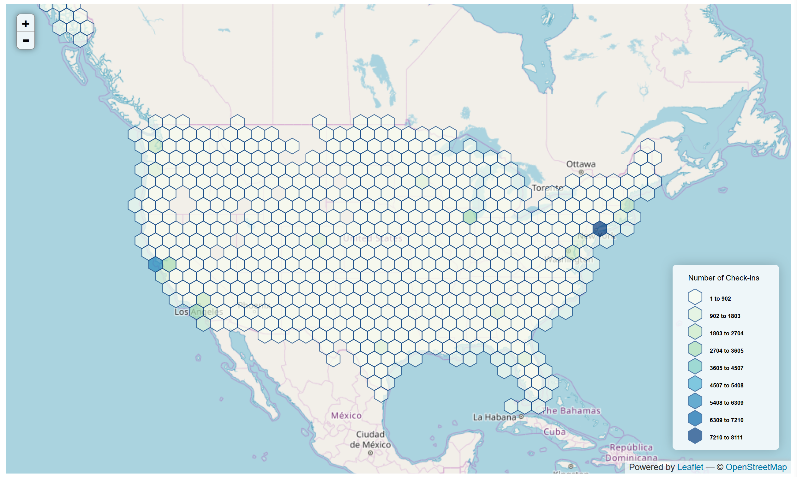
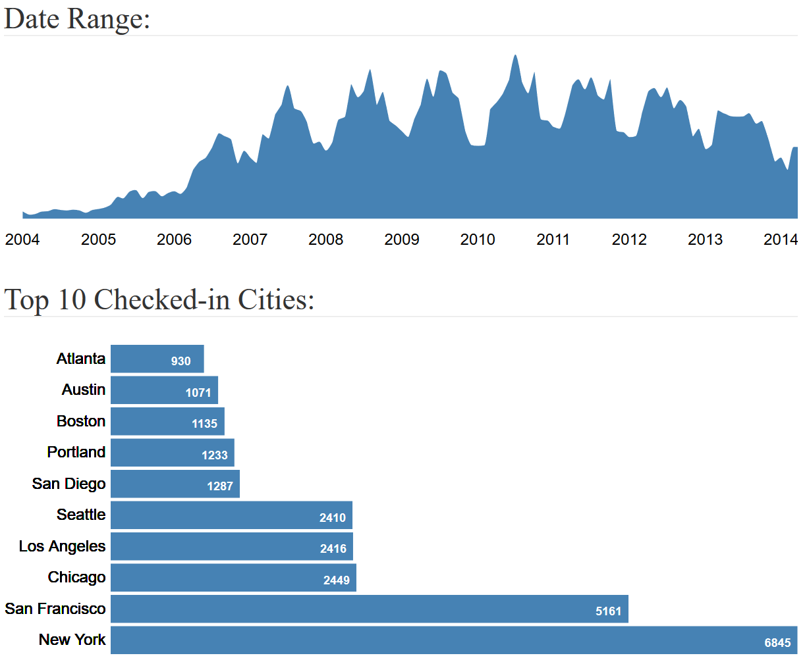
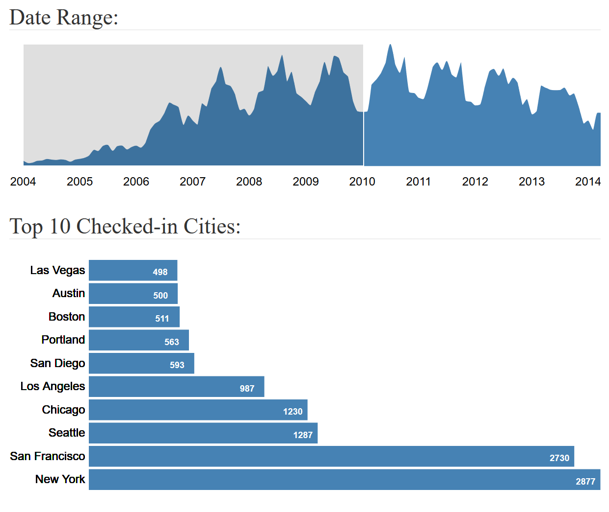
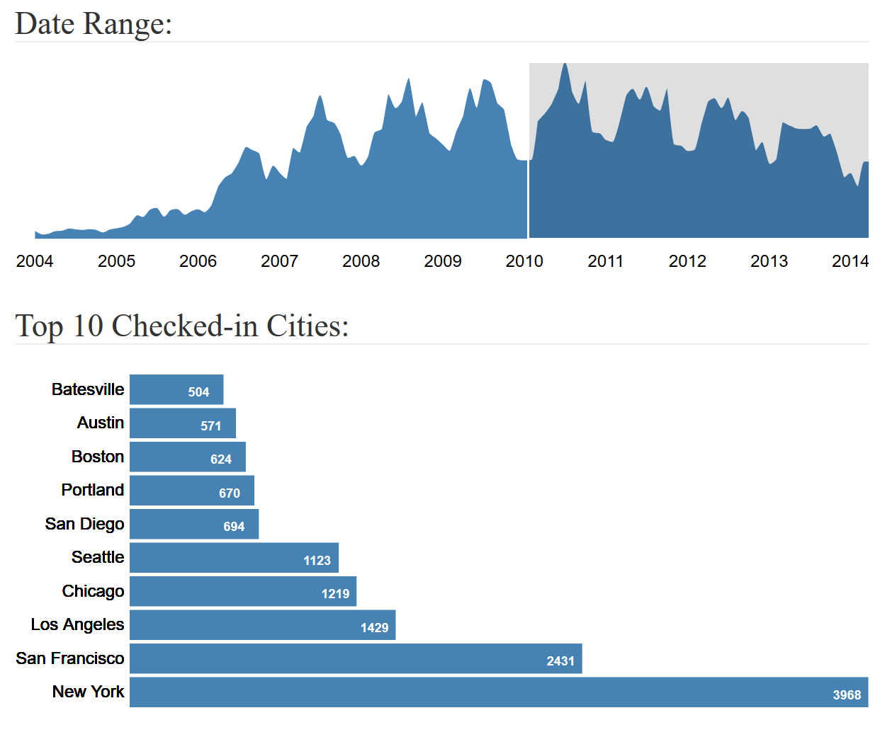

Motivation:
While the procession of
transportation industry in the last hundred years enabled more travelling
options to the people, it wasn’t until just half a decade ago that the
egression of social media platforms, shared thriftiness and GPS equipped mobile
phones enabled these digital footprints of human mobility to be available publicly
to the entire world. In this new world of shared economy, travelling cost per
person has reduced due to which more and more people are moving from one region
to another leaving behind their digital trails on social media sites. Although
it might be still unclear about how continuing our online existence is going to
affect the future of human race, one thing is for certain that all this data
that we are producing every day exemplifies an inexhaustible resource which can
be utilized for innumerous scientific studies.
The geo-location part of travel check-ins allows researchers to concentrate
their focus on regions like populated cities. More than half of the population
of the entire world resides in them. However, these cities aren’t studied just
because a lot of people live in them, but also because they have a rich history
of development and growth, which lures many travelers and tourists from all
over the world.
In this era of social networking sites, people’s behavior online could help us
have an idea about their tastes and preferences. Social check-ins, which store
geo-tagged information about users, can be utilized by researchers and
businesses to investigate these preferences and improve their services. In this
project, we utilize the travel check-in data and use data-based visualizations
to explore, assess and evaluate multiple SVD algorithms for the purposes of
identifying anomalies, generating trust and providing the best recommendation
for cities to visit in the USA.
Data:
We are using Yahoo Flickr Creative Commons (YFCC100M)
dataset which is known to be one of the largest assemblages of multimedia
check-ins ever created. It is publicly hosted on AWS and was released under the
Yahoo Web-Scope program. It comprises of hundred million media objects dating
between 2004 and 2014. Each line contains the metadata for one media object.
The metadata is cut and tab-separated into following field names: media
identifier, user identifier, date taken, date uploaded, capture device, location
(longitude & latitude, if available), accuracy and Creative Commons license
it was published under. In addition, metadata fields like object title, machine
tags, user tags, media description and a link from where the media object can
be downloaded are listed.
We pruned the data first by eliminating unwanted columns in order to make it
workable with limited RAM; and then by omitting records that weren’t geo-tagged
(i.e. more than 50%). Since we are focusing the study only on the cities in the
US, we further filtered the data to records checked in the US. To do so, an
expansion of YFCC100M containing the reverse geocode information of all records
was utilized. After both pruning and merging, we were left with about 16
million records and the following set of columns.
|
Column
|
Description
|
Data Type
|
|
pid
|
Unique media identifier
|
categorical
|
|
address
|
Reverse geocode information
|
categorical
|
|
user_nickname
|
User identifier
|
categorical
|
|
date_taken
|
Date the media object was created
|
ordinal
|
|
longitude
|
Longitude of the location the
media object was checked at.
|
quantitative
|
|
latitude
|
Latitude of the location the media
object was checked at.
|
quantitative
|
|
url
|
Link from where the media object
can be downloaded
|
categorical
|
|
town
|
City the media object was checked
in, extracted from address column
|
categorical
|
|
state
|
State the media object was checked
in, extracted from address column
|
categorical
|
Data Analysis:
Visualization
1: Check-ins hex-binned by location on Map

The above vizualiztion shows a
hex-bined map of a sample of data. Hex-bins are used
to encode location of check-ins and color is used to encode number of check-ins
in that area. We see most of the check-in concentration is around cities like
New York and San Francisco. The middle of the US has the least number of
check-ins. It seems most of the popular cities which users like to travel to
situated on coasts of the US.
Visualization
2: Top-10 Cities in Specified Date Range

The above visualization shows an
area chart which encodes date data on x axis and number of check-ins on the y
axis; accompanied by a bar chart which encodes the top-10 cities on y-axis and
number of check-ins on the x-axis, in the specified date range. We clearly see
the leading cities across the US.
One interesting thing we noticed from this visualization, that before 2010, we
can see New York and San Francisco closely competing in the number of
check-ins. While after 2010, we see New York majorly took lead, have almost
twice the number of check-ins as San Francisco.


Task
Analysis:
|
Index #
|
“Domain” task
|
Analytic Task
|
Search Task
|
Analyze Task
|
|
3
|
Examining the model performance of the recommended places for
given user history
|
Filter
|
Locate
|
Present
|
|
5
|
Providing the list of most possible predictions of the model
output for given user
|
Sort
|
Explore
|
Present
|
|
2
|
Visualization of different modeling parameters and evaluations
|
Compare
|
Explore
|
Discover
|
|
1
|
Exploratory Data Visualizations
|
Compare
|
Explore
|
Discover
|
|
4
|
Evaluation of predicted recommendations
|
Compare
|
Explore
|
Present
|
Our visualization will
be primarily developed for “discover” (i.e., exploratory visualization),
“present” (i.e., communicative visualization) consumptions. The three domain task will enable our potential users to have
more understanding and flexibility of choosing different models for the
location recommendation tasks. The reasons of choosing the specified tasks are
as follows:
- Index
#3: Physically demonstrate and deliver the models outputs to the users.
- Index
#5: As the model will predict the given user's tendencies as a number, we
will be sorting the top 10 locations rather than calculating the proximity
to the real location. Here we will evaluate our model performance using
Precision@10 metric which is looking at the user’s top ten location
preference and predicted top 10 recommendations.
- Index
#2: Enable users to choose their modeling approach (at least 2 different
models) and tune their parameter and evaluation metrics (i.e. they may
want to see just the top 3 recommendations and the evaluations according
to their choice)
- Index
#1: Get an idea about the data on which all the analysis is based on.
- Index
#4: Visual evaluations of results.
The users of the end
product will be the researchers and machine learning engineers who are
interested in recommendation systems.
Model Description:
We give the user the freedom to
assess and visualize different adaptations of SVD on his/her selection of
hyperparameters.
We have the following options for Hyperparameter
Testing and Model Selection:
Preprocessing:
- Numeric:
Count the number of check-ins for each city per user, this creates a
numeric label in domain [0, inf).
- Binary:
Label User-Location pair as 1 if user has checked-in in that city,
otherwise 0.
Models:
- SVD_explicit:
Use Singular Value Decomposition to extract user and location features and
approximate the missing user check-ins by matrix factorization.
- SVD_implicit:
Use Singular Value Decomposition to extract user and location features and
then applying Alternating Least Square method to get an optimal fit for
missing points.
Latent
Dimensions: Denotes the number of
dimensions/features to extract for each user and location.
Metric:
- Precision-Train
Set: Use Precision@10 metric which looks at the user’s top ten location
preference and compare it with the predicted top 10 recommendations for Train
Set.
- Recall-Train
Set: Use Recall as metric to assess the user’s top ten location preference
and compare it with the predicted top 10 recommendations for Train Set.
- Precision-Validation
Set: Use Precision@10 metric which looks at the user’s top ten location
preference and compare it with the predicted top 10 recommendations for Validation
Set.
- Recall-Validation
Set: Use Recall as metric to assess the user’s top ten location preference
and compare it with the predicted top 10 recommendations for Validation
Set.
- RMSE-Train
Set: Use RMSE metric which looks at the user’s top ten location preference
and compare it with the predicted top 10 recommendations for Train Set.
- RMSE-Validation
Set: Use RMSE metric which looks at the user’s top ten location preference
and compare it with the predicted top 10 recommendations for Validation
Set.
Design Process:
sketches and design choices to
justify final visualization Evidence of iterative improvement. Logical
discussion of design choices grounded in theory from course.
Final Visualization:
final visualization, design justifications,
packages utilized for coding, and UI walk-through
Conclusion:
short
summary of work completed and areas for improvement/future-work). Meaningfully
wraps up project and has good future directions. Additional non-required
sections may be added to the website to thoroughly explain/frame the final
project.